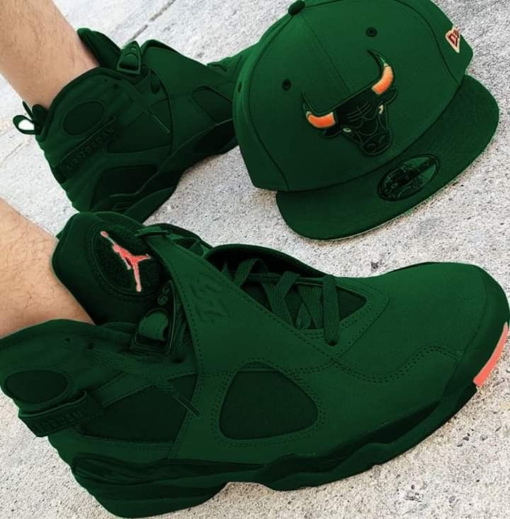

fashion designing is the cretive Process of developing and creating clothing, accessories, and footwear.
It involves understanding trends, interpreting societal needs, and translating them into visually appealing and functional designs.
items worn on the body for various purposes, including protection from the elements, modesty, and fashion. They are typically made from fabrics or textiles but can also include items like animal skins or other natural materials.



a small, specialized retail shop, often known for its unique and carefully curated selection of fashionable clothing, accessories, and other goods.